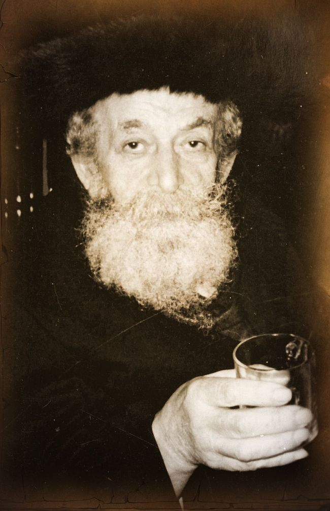

Story of a Hidden Neshama
R ’ Moshe Shuster was a known personality in B ’ nei Brak. He was a man of tz ’ daka and chesed who acted like a simple person. Not many knew of his spiritual greatness which he worked to conceal from all. * He was in touch with the Rebbe and even this was done secretively, but from the little that he revealed we see that the Rebbe greatly cherished him and recognized his greatness. The crowning moment was when they met and the Rebbe received him in a most unusual way .

A mysterious figure slightly bent over, that was R’ Moshe Shuster. He had gone through the terrible years of the Holocaust and stayed alive through open miracles. After the war he moved to Eretz Yisroel and settled in B’nei Brak.
He always tried to cast a fog about him so that people would not see his true greatness. His life was shrouded in layer upon layer of concealment. For example, anytime he quoted a Gemara, he would preface it with an apology, “Yesterday, I saw in some book that brings from an amazing Gemara in Eiruchin,” or “Before Mincha I glanced in a book that brings the p’sak of the Nimukei Yosef.” He made it appear as though he never opened a Gemara or halachic work on his own, even though peers of his testified that when he was very young he learned Gemara day and night with unusual diligence. Back then, the heads of his yeshiva sensed his unusual abilities and they sent him to learn in one of the big yeshivos of the time.
Only on rare occasions would R’ Shuster open his mouth. In a quick, whispered voice his words flew from sharp sayings, short but sharp as a razor, to captivating stories of tzaddikim. His words were still flying in the air and making hearts race and he was already gone from the table…
His davening was also shrouded in mystery. Throughout the day his face had, as it were, seven seals, but when he davened it was fortified with seventy-seven locks. He sat motionless, his lips barely moving, just the pages moved quickly before his staring eyes. Only on Friday night, during the Zohar recitation of the davening, was a change apparent in him. His blue eyes would roll upward and his entire body would tremble in awe. This was an inner storm of a fleeting instant, and then immediately he would recede into the mysteries of his soul.
R’ Moshe Shuster was not only a man of Torah and t’filla, but was mainly a man of chesed. His entire life was chesed with every hour devoted to doing kindness with another Jew, whether doing physical acts of chesed with those who needed help or by making his rounds and collecting money for those in need.
There were a few wealthy Jews in Eretz Yisroel and abroad who knew R’ Moshe Shuster and knew that he wasn’t just another beggar. They would send him large sums now and then for him to distribute to the poor and needy as he saw fit. They considered it a boon for their success, for they knew that there was no more trustworthy and upright man than R’ Moshe Shuster, who would not retain even a cent for himself. He would give it all to those who needed it. As for him, that same day he would run from one shul to another, from one collapsing house to another, would hand over a sealed packet and then he would instantly disappear, moving on to the next address.
His acts of kindness were nonstop giving, whether with money, food or drink or a comfortably made bed. He would also mention people’s names to tzaddikim and ask for a yeshua on their behalf, ample livelihood, and good health. It was a secret between him and those great men.
R’ Sholom Horowitz of Crown Heights was a shliach, on behalf of his father-in-law, the gabbai tz’daka and chesed, R’ Yaakov Friedman, to R’ Moshe Shuster. R’ Yaakov Friedman, a known figure of kindness in Crown Heights, would collect money throughout New York for various tz’daka causes and would send money to R’ Moshe Shuster.
In the book, Tiferes Yaakov, that he wrote about his father-in-law, R’ Horowitz relates an amazing anecdote, “Whenever I traveled to Eretz Yisroel, my father-in-law would send money with me to give to R’ Moshe. The first time I went to him, I did not know him and had never seen him. He identified me as I was walking toward him and announced, ‘Sholom ben Chana Rochel.’
“Until today, I have no idea how he identified me, how he knew my name and my mother’s name, and I had not informed him ahead of time that I was planning a trip to Eretz Yisroel.”
The Klausenberger Rebbe zt”l (d 1994) said about him, “R’ Moshe belongs to earlier generations. It is like they drew him out of an ancient box…. Just like that … they took him out and planted him in our generation.”
Many people who knew R’ Moshe for years never heard him say a bad word about anyone. His lips were sealed. In general, he was reticent and you only occasionally heard his voice.
Throughout the day he ran from place to place and nobody knew from where to where. He wisely managed to conceal himself from all, cloaking himself with mitzvos and good deeds, but his true identity was known only to the tzaddikim of the generation. R’ Moshe Shuster was a wondrous riddle. His Rebbe, R’ Arele, summed him up pithily, “He’s a secret.”
HE SENT MAAMAD, INCLUDING BACKPAY FROM 10 Shvat 5711
R’ Moshe Shuster had a soul connection with the Rebbe. Few were those who knew about their relationship and the little that was known concealed far more. He would speak loftily about the greatness of the Rebbe “who sacrifices himself for the sake of Jews;” speaking in wondrous terms about the Rebbe’s incredible genius as seen in his sichos; he would say we ought to thank G-d for this great neshama that He planted in this world so that the generation would have upon whom to depend. “Holy of holies,” such was the intensity of his expressions about the Rebbe, which was not something he commonly said about other tzaddikim.
R’ Moshe’s acquaintance with the Rebbe began in the 50’s when he started sending Maamad (money in support of the Rebbe’s household) on a regular basis. He even wanted to send back pay from Yud Shvat 5711.
He was awesome in his defense of the honor of the Rebbe as the following story illustrates:
At a certain point, one of the rabbis in Eretz Yisroel had the nerve to speak disparagingly about the Rebbe and his holy mitzva campaigns and on a certain occasion he spoke sharply against the holy work of the Rebbe and his Chassidim in being mekarev Jews. R’ Moshe Shuster was upset by this. In contrast to his usual practice of suffering in silence, he warned the rabbi, “You should know that you are playing with fire.” R’ Moshe referred to the statement in Avos, “Beware lest you be burned by their [the fire of the sages] embers,” but the rabbi maintained his position and continued speaking derisively about the Rebbe.
Shortly after R’ Moshe rebuked him, a spirit of folly suddenly entered the heart of this rabbi’s only son and he began to leave a life of Torah and mitzvos. Within a short time, he had become completely irreligious. The father and the entire family were devastated by this. Due to their exalted stature in the community, they tried to involve various persons to try and speak to their son, but nothing worked. Months and then years passed and the bond between father and son was completely severed. The parents silently bore their terrible pain.
One day, their son was walking on a busy street in Tel Aviv. A Lubavitcher there was asking passersby to put on t’fillin. He offered t’fillin to the young man but was refused. The Lubavitcher did not give up quickly and tried to persuade him. Seeing that the young man was still refusing, the Chassid said, “I’m going to ask you a personal favor. I’ve been standing here a long time and haven’t managed to put t’fillin on with even one person. Please, do me a favor and put on t’fillin, if not for the mitzva then at least for my sake.”
At this, the young man agreed to put on t’fillin. As he put them on, the Lubavitcher saw that he knew what to do and so he got into a conversation with him, in which the young man told him about the frum home he had been born into and how he had decided to walk away from it all.
They exchanged phone numbers and kept in touch. Slowly, the Chassid was able to be mekarev him and after some time, he became a baal teshuva and returned to his parents’ home.
Realizing the chain of events that led to his son’s return, the father decided to travel to the Rebbe and apologize. He had yechidus in which he told the Rebbe how he used to speak against him and his mivtzaim, and about what happened to his son and how his son came back because of the Rebbe’s Chassid. He emotionally asked the Rebbe for forgiveness.
The Rebbe said, “When your only son left the derech, you were very pained by it, for that is the love a father has for his son. You should know that to the Rebbe, my teacher and father-in-law, every Jew is an only son.”
THE REBBE IDENTIFIED R’ MOSHE’S HANDWRITING
R’ Moshe Shuster loved the Rebbe. He once said to one of the Chabad rabbanim in B’nei Brak with great surprise, “Where could a Chassidish young man travel today for the yomim tovim if not to Lubavitch?”
Speaking about a connection between souls, this connection is not measured in things visible to the eye but in those things that the neshama senses. R’ Moshe saw the Rebbe only one time, at the end of his life, and yet they had a hidden, deep, amazing connection.
One of the Chassidim, with whom R’ Moshe would send packages of kvitlach (pidyonei nefesh), most of which contained requests for salvation for people in material or spiritual matters, related that the Rebbe attributed special importance to the envelopes from R’ Moshe Shuster. “The first time R’ Moshe sent a package with me to the Rebbe was in 5730. When I had yechidus, I took the large envelope with me. At the end of our conversation, in the middle of the night, I asked permission to give the Rebbe something from R’ Moshe Shuster of B’nei Brak.
“‘Yeh.’ The Rebbe’s face lit up and he immediately accepted the envelope and glanced at it, seeing the name of R’ Moshe on it. The Rebbe took out a pencil and between the words ‘Moshe Shuster’ he made two lines above and wrote ‘ben Toiba Rassi.’ Then the Rebbe said, ‘This envelope is full of the names of Jews, fahr Yuden’s veigen [for the sake of Jews].’”
It was amazing how the Rebbe used this expression, “fahr Yuden’s veigen,” a Belzer expression that R’ Moshe always used. The Rebbe used it as someone who knew R’ Moshe well.
Another time, R’ Moshe sent notes to the Rebbe in a sealed envelope. On the envelope, R’ Moshe had simply written, “Please give this to the Rebbe shlita.”
The Chassid who brought the envelope to the Rebbe was R’ Moshe Yehuda Leib Landau, rav of B’nei Brak. When R’ Landau gave the envelope to the Rebbe, the Rebbe glanced at it and said in excitement, “This is R’ Moshe Shuster’s handwriting!”
R’ Moshe would have his name mentioned many times to the Rebbe. Often this was done through a friend, the gabbai tz’daka, R’ Yaakov Friedman. For example, he wrote to R’ Friedman in a letter from 4 Tetzaveh 5740: “To his honor, the friend of those who are broken, R’ Yaakov ben Alte Chava.
“Please mention me to the Lubavitcher Rebbe for good health. I was unable to walk on my left foot and this interfered with mitzvos. Boruch Hashem, I’ve improved and today the doctor told me to put my foot on the ground. With Hashem’s help, in the merit of the tzedakos for which I am an emissary, this will stand by me and it will be, with Hashem’s help, even better.
“Mention me to the Rebbe for a complete recovery, speedily and consistently.”
He wrote another letter dated 11 Cheshvan: “I greatly beseech you to mention me constantly to the Lubavitcher Rebbe.”
HIS ONLY ENCOUNTER WITH THE REBBE
When R’ Moshe had to go to the United States for medical reasons, he went to the Rebbe for “dollars.” People who knew who he was, brought him with his escorts to the Rebbe.
This was the only time he saw the Rebbe. As soon as the Rebbe saw him, even before he opened his mouth, the Rebbe said with a luminous countenance, “We have a long-lasting connection through letters. Boruch Hashem that we get to see one another face to face.” That was all the Rebbe said. He gazed at R’ Moshe who stood before the Rebbe wide-eyed, paralyzed with awe. Afterward, he did not remember any of it and was only glad that he had merited to be in the Rebbe’s presence.
Menachem Ziegelboim. "Story of a Hidden Neshama." Beis Moshiach, no. 1005 (January 20, 2016).